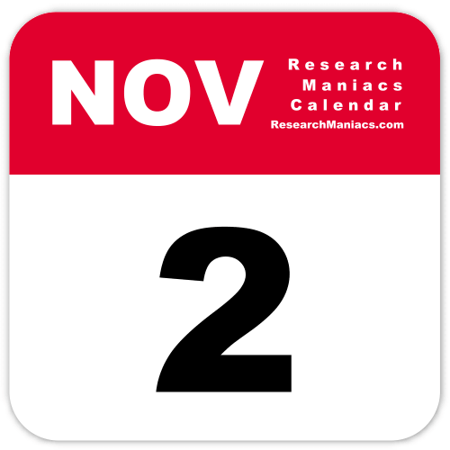

Tribute to November 2nd

1777: Washington learns of Conway cabal
1816: Jubal Early born
1844: Thackeray completes Barry Lyndon
1883: Black Bart makes his last stagecoach robbery
1903: Panama declares independence
1918: Central Powers face rebellion on the home front
1930: Detroit-Windsor Tunnel opens to traffic
1941: The order is given: Bomb Pearl Harbor
1948: Newspaper mistakenly declares Dewey president
1957: The Soviet space dog
1962: The Crystals earn a #1 hit with “He’s A Rebel”—or do they?
1964: D.C. residents cast first presidential votes
1964: Johnson defeats Goldwater for presidency
1967: Battle of Dak To begins
1969: Nixon calls on the “silent majority”
1974: Hotel fire ends in disaster in South Korea
1976: Carrie creeps out audiences
1979: Communists and Klansmen clash in Greensboro
1984: A serial killer abducts and rapes his teenage victim
1986: Iran arms sales revealed
1998: The Body is elected governor of Minnesota
By the way: at anytime you can click on any of these dates to learn more :).